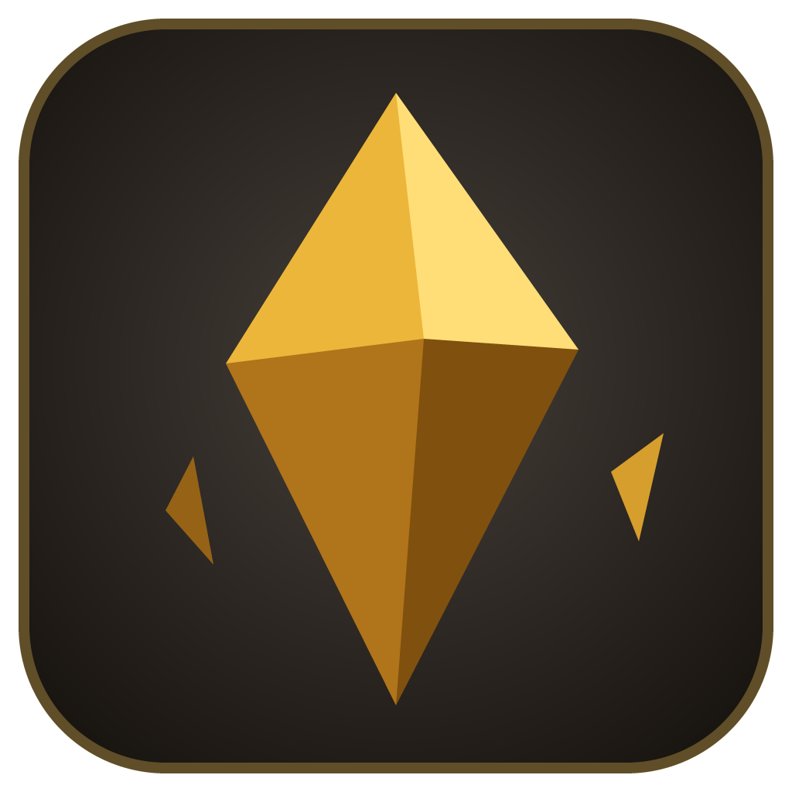

Meridian Shards
The desktop client: the whole game in one download. It keeps itself up to date.
Windows
Windows 10 or later, 64-bitChecking…
macOS
macOS 12 or later, Apple silicon or IntelChecking…
Linux
64-bit AppImage or Debian packageChecking…
Or play in your browser, no download needed.
The builds aren't signed yet. On Windows, choose More info → Run anyway if SmartScreen
stops the installer. On macOS, right-click the app and choose Open the first time.
On Linux, make the AppImage executable (chmod +x) and run it.
Meridian Shards is free software under the GNU General Public License, version 2: the source code and every release are on GitHub.